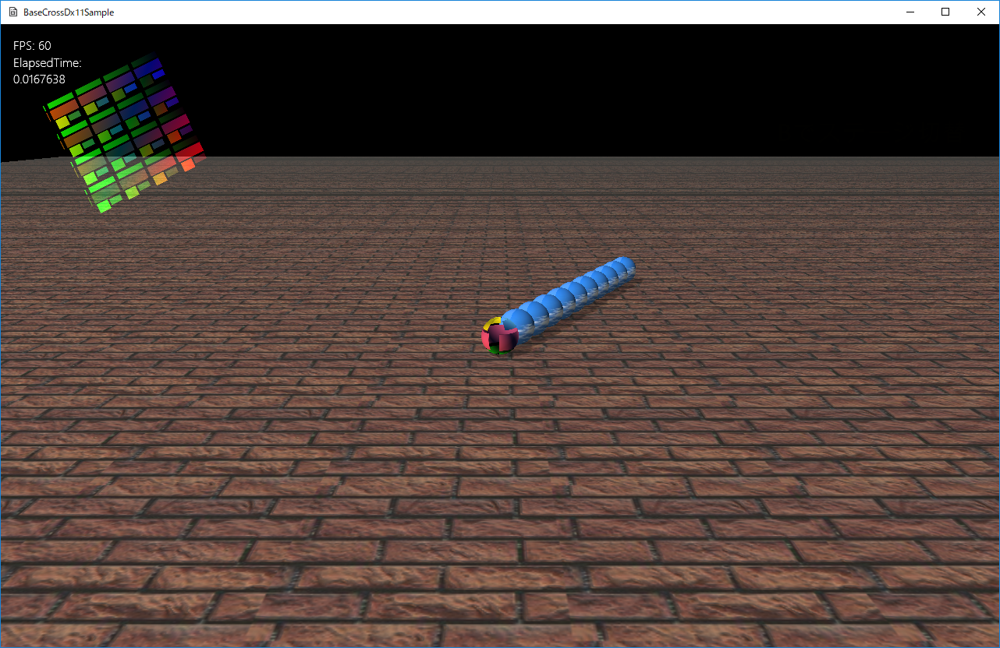

図0025a
class ChildObject : public GameObject,public MatrixInterface {
//中略
//親オブジェクト
weak_ptr<GameObject> m_ParentPtr;
//このオブジェクトのプレイヤーから見たローカル行列
Mat4x4 m_PlayerLocalMatrix;
//プレイヤーの直後（先頭）の場合の補間係数
float m_LerpToParent;
//このオブジェクトのチャイルドオブジェクトから見たローカル行列
Mat4x4 m_ChildLocalMatrix;
//チャイルド後の場合の補間係数
float m_LerpToChild;
//Attack1の場合の目標となる回転
float m_Attack1ToRot;
//ステートマシーン
unique_ptr<StateMachine<ChildObject>> m_StateMachine;
public:
//--------------------------------------------------------------------------------------
/*!
@brief コンストラクタ
@param[in] StagePtr ステージのポインタ
@param[in] ParentPtr 親のポインタ
@param[in] TextureResName テクスチャリソース名
@param[in] Scale スケーリング
@param[in] Qt 初期回転
@param[in] Pos 位置
@param[in] OwnShadowActive 影描画するかどうか
*/
//--------------------------------------------------------------------------------------
ChildObject(const shared_ptr<Stage>& StagePtr,
const shared_ptr<GameObject>& ParentPtr,
const wstring& TextureResName, const Vec3& Scale, const Quat& Qt, const Vec3& Pos,
bool OwnShadowActive);
//中略
//--------------------------------------------------------------------------------------
/*!
@brief ステートマシンを得る
@return ステートマシン
*/
//--------------------------------------------------------------------------------------
unique_ptr< StateMachine<ChildObject> >& GetStateMachine() {
return m_StateMachine;
}
//--------------------------------------------------------------------------------------
/*!
@brief ワールド行列の取得
@return ワールド行列
*/
//--------------------------------------------------------------------------------------
virtual void GetWorldMatrix(Mat4x4& m) const override;
//--------------------------------------------------------------------------------------
/*!
@brief 追従する行動の開始
@return なし
*/
//--------------------------------------------------------------------------------------
void ComplianceStartBehavior();
//--------------------------------------------------------------------------------------
/*!
@brief 攻撃１行動の開始
@return なし
*/
//--------------------------------------------------------------------------------------
void Attack1StartBehavior();
//--------------------------------------------------------------------------------------
/*!
@brief 攻撃１行動の継続
@return 行動が終了したらtrue
*/
//--------------------------------------------------------------------------------------
bool Attack1ExcuteBehavior();
//--------------------------------------------------------------------------------------
/*!
@brief ステート共通処理
@return なし
*/
//--------------------------------------------------------------------------------------
void UpdateBehavior();
};
class MatrixInterface {
protected:
MatrixInterface() {}
virtual ~MatrixInterface() {}
public:
//--------------------------------------------------------------------------------------
/*!
@brief ワールド行列の取得（純粋仮想関数）
@return ワールド行列
*/
//--------------------------------------------------------------------------------------
virtual void GetWorldMatrix(Mat4x4& m) const = 0;
};
virtual void GetWorldMatrix(Mat4x4& m) const = 0;
ChildObject(const shared_ptr<Stage>& StagePtr,
const shared_ptr<GameObject>& ParentPtr,
const wstring& TextureResName, const Vec3& Scale, const Quat& Qt, const Vec3& Pos,
bool OwnShadowActive);
//プレイヤーの作成
shared_ptr<GameObject> Par =
AddGameObject<Player>(
L"TRACE_TX",
true,
Vec3(0.0f, 0.125f, 0.0f)
);
for (int i = 0; i < 10; i++) {
float x = (float)(i + 1);
Par = AddGameObject<ChildObject>(
Par,
L"SKY_TX",
Vec3(0.25f, 0.25f, 0.25f),
Quat(),
Vec3(x, 0.125f, 0.0f),
false);
}
void ChildObject::UpdateBehavior(){
//前回のターンからの経過時間を求める
float ElapsedTime = App::GetApp()->GetElapsedTime();
auto shptr = m_ParentPtr.lock();
//親のワールド行列を取得する変数
Mat4x4 ParMat;
if (shptr) {
ParentFlg flg = ParentFlg::NoParent;
//行列取得用のインターフェイスを持ってるかどうか
auto matintptr = dynamic_pointer_cast<MatrixInterface>(shptr);
if (matintptr) {
matintptr->GetWorldMatrix(ParMat);
if (shptr->FindTag(L"Player")) {
flg = ParentFlg::Player;
}
else if (shptr->FindTag(L"ChildObject")) {
flg = ParentFlg::Child;
}
}
Mat4x4 World;
World.identity();
float LerpNum = 0.2f;
switch (flg) {
case ParentFlg::Player:
//行列の定義
World = m_PlayerLocalMatrix;
LerpNum = m_LerpToParent;
break;
case ParentFlg::Child:
//行列の定義
World = m_ChildLocalMatrix;
LerpNum = m_LerpToChild;
break;
default:
break;
}
if (flg != ParentFlg::NoParent) {
//スケーリングを1.0にした行列に変換
ParMat.scaleIdentity();
//行列の反映
World *= ParMat;
//この時点でWorldは目標となる位置
Vec3 toPos = World.transInMatrix();
//補間処理で移動位置を決定
auto CalcPos = Lerp::CalculateLerp(m_Rigidbody->m_BeforePos, toPos, 0, 1.0f, LerpNum, Lerp::rate::Linear);
Vec3 DammiPos;
World.decompose(m_Rigidbody->m_Scale, m_Rigidbody->m_Quat, DammiPos);
Vec3 Velo = CalcPos - m_Rigidbody->m_BeforePos;
Velo /= ElapsedTime;
m_Rigidbody->m_Velocity = Velo;
}
}
}
ParMat.scaleIdentity();
//行列の反映
World *= ParMat;
void ChildObject::ComplianceStartBehavior() {
//ローカル行列の定義
m_PlayerLocalMatrix.affineTransformation(
m_Rigidbody->m_Scale,
Vec3(0, 0, 0),
Quat(),
Vec3(0, 0, -0.25f)
);
//このステートではチャイルドの場合も同じ
m_ChildLocalMatrix = m_PlayerLocalMatrix;
m_LerpToParent = m_LerpToChild = 0.2f;
}